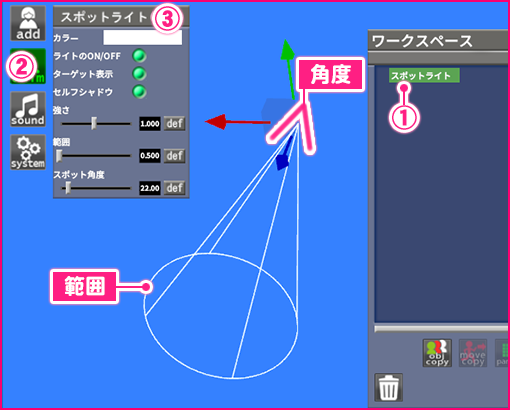
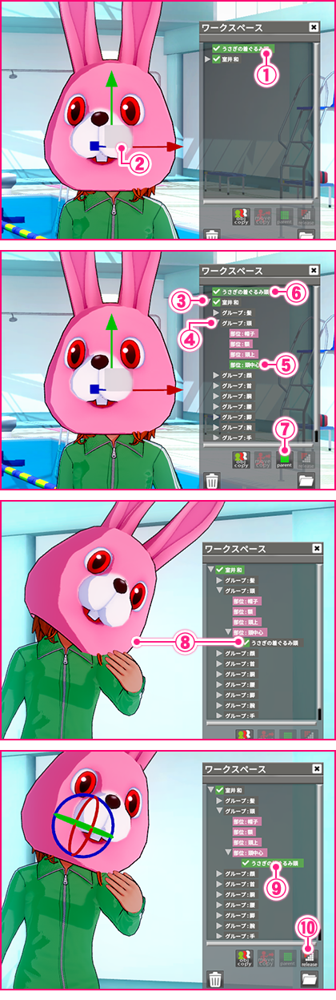
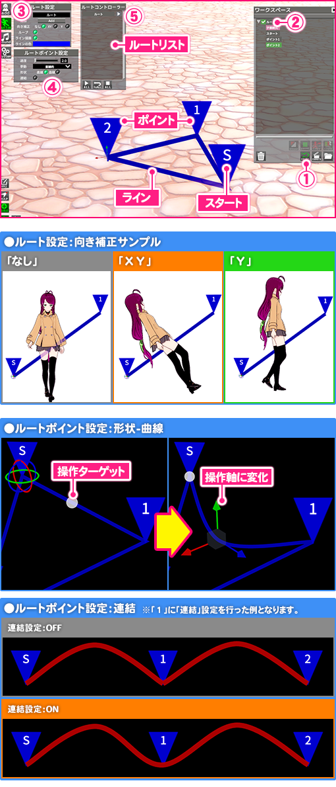

はじめに
この度はWindows 7 / 8.1 / 10 専用ソフト「コイカツ！」をお買い上げいただきまして誠にありがとうございます。
ご使用前に「CHARA STUDIO プレイマニュアル」をよくお読みいただき、正しくお楽しみ下さい。
ご使用前に「CHARA STUDIO プレイマニュアル」をよくお読みいただき、正しくお楽しみ下さい。
利用規約
ゲームをプレイする前に必ずお読み下さい。
ハードディスク中にあるデータ及びプログラムなどはバックアップをし、良識的な行動に努めて下さい。
●この作品はすべてフィクションです。
作品内に登場する人物・団体名・地名・商品名・事件及び時代背景・職業は全て架空のものであり、実際のものとは一切関係ありません。
また、このゲームは作品内容及び演出上18歳未満の方の購入・プレイが禁止されています。
登場人物は全て18歳以上です。
また、インターネットでのファイル共有やアップロード、レンタル業務、中古品の取り扱い、及びそれに類する行為での使用は一切認めておりません。
●動画配信、並びにスクリーンショット等の二次利用は禁止とさせて頂きます。
●本作品には暴力的、残酷的なシーン、犯罪にあたる行為等、過激な表現が含まれております。絶対に真似をしないで下さい。
作品内での行動は同意の上の演技でありフィクションです。 この作品の内容と同じ事を現実に行うと法律によって処罰される場合があります。
●長時間プレイする場合は、健康のため1～2時間ごとに10～15分程度の小休止をして下さい。
以前テレビを見ていて、または強い刺激を受けたときに一時的に筋肉の痙攣や意識の喪失などを経験した方は、ゲームを始める前に医師と相談して下さい。
ゲームのプレイ中にそのような症状が起きた場合は、直ちにゲームを止め、医師の診断を受けて下さい。
※ 各商品名は一般に各社の登録商標または商標ですが、C及びTMは省略しております。
！免責事項！
●本ソフトウェアを使用する事で発生したトラブルや損失、損害に対して、当社は一切責任を負いません。また、動作保証は致しません。ハードディスク中にあるデータ及びプログラムなどはバックアップをし、良識的な行動に努めて下さい。
●この作品はすべてフィクションです。
作品内に登場する人物・団体名・地名・商品名・事件及び時代背景・職業は全て架空のものであり、実際のものとは一切関係ありません。
また、このゲームは作品内容及び演出上18歳未満の方の購入・プレイが禁止されています。
登場人物は全て18歳以上です。
！禁止事項！
●このプログラム、データ及びマニュアルの一部または全部を無断で複製や改造する行為は、法律によって禁止されています。また、インターネットでのファイル共有やアップロード、レンタル業務、中古品の取り扱い、及びそれに類する行為での使用は一切認めておりません。
●動画配信、並びにスクリーンショット等の二次利用は禁止とさせて頂きます。
●本作品には暴力的、残酷的なシーン、犯罪にあたる行為等、過激な表現が含まれております。絶対に真似をしないで下さい。
作品内での行動は同意の上の演技でありフィクションです。 この作品の内容と同じ事を現実に行うと法律によって処罰される場合があります。
！注意！
●モニターに近づき過ぎないように注意して下さい。●長時間プレイする場合は、健康のため1～2時間ごとに10～15分程度の小休止をして下さい。
！警告！
●疲れているときのプレイや連続した長時間のプレイは健康上好ましくありませんので避けて下さい。以前テレビを見ていて、または強い刺激を受けたときに一時的に筋肉の痙攣や意識の喪失などを経験した方は、ゲームを始める前に医師と相談して下さい。
ゲームのプレイ中にそのような症状が起きた場合は、直ちにゲームを止め、医師の診断を受けて下さい。
※ 各商品名は一般に各社の登録商標または商標ですが、C及びTMは省略しております。
本プログラムについて
※本ソフトウェアをプレイするに「コイカツ！」がインストールされている必要があります。予めご了承下さい。
・本プログラムはキャラクターやアイテム等を自由に配置し、表情やポーズ、アニメーションを組み合わせて思い通りのシーンを演出するジオラマ系キャラビューアーソフトです。
※ゲームにＨシーンを追加するシーンエディタではございません。
・本プログラムはキャラクターやアイテム等を自由に配置し、表情やポーズ、アニメーションを組み合わせて思い通りのシーンを演出するジオラマ系キャラビューアーソフトです。
※ゲームにＨシーンを追加するシーンエディタではございません。
動作環境
-
・「コイカツ！」がインストールされた状態で、ＨＤＤ空き容量が5GB必要となります。それ以外は基本的に「コイカツ！」とほぼ同環境となります。
詳しくは 「 コイカツ！ プレイマニュアル 」 をご覧下さい。
※CHARA STUDIO は1280 x 720以上のディスプレイ解像度が必要となります。
※表示する人数やアイテムの数によっては動作が重くなる可能性があります。
インストール方法
-
①フォルダ内の「FileCopy.exe」を右クリック→管理者として実行 で起動して下さい。
②「FileCopy」ウインドウの 「 開始 」 ボタンを選択し、 「 完了 」 と表示されたら「 終了 」を選択して下さい。
③ゲームを起動して「初期設定」画面が変化していればインストール完了です。
※一度インストールを行えば、再度インストールを行う必要はございません。
※ゲームのインストールには環境によって異なりますが1時間前後かかる場合がございます。
画面のメーターが進まない、応答なしの等の表記が出ても裏で作業が続いていますので、エラーが出ない限りはお待ち下さい。
アンインストール方法
※本ソフトウェアは「コイカツ！」に追加する形でインストールを行うため、単独で削除することができません。
アンインストールを行う場合は、「コイカツ！」をアンインストール後に手動で削除して頂く必要があります。
・Windowsの「コントロールパネル」より「プログラムのアンインストール」から「ILLUSION コイカツ！」をアンインストールして下さい。
・アンインストール後にインストール先を開き、残っているファイルを削除して下さい。 ※標準では C:\illusion にインストールされています。
アンインストールを行う場合は、「コイカツ！」をアンインストール後に手動で削除して頂く必要があります。
・Windowsの「コントロールパネル」より「プログラムのアンインストール」から「ILLUSION コイカツ！」をアンインストールして下さい。
・アンインストール後にインストール先を開き、残っているファイルを削除して下さい。 ※標準では C:\illusion にインストールされています。
基本操作
- Windows基本操作
-
本プログラムでは以下のWindows基本操作を使用します。
①左クリック ： マウスの左ボタンを押して下さい。 ②左ボタンドラッグ ： マウスの左ボタンを押したままマウスを動かして下さい。
本マニュアルでは「～を選択して下さい」という表現がございます。こちらの記載があった場合は「～」の部分にマウスカーソルを移動させて、マウスの左ボタンをクリックして下さい。
（例：「決定ボタンを選択して下さい」とありましたら、「決定ボタン」にマウスカーソルを移動させてマウスの左ボタンをクリックして下さい。）
※場合によってはファイルのコピー・移動・削除等の操作を行う必要がある場合があります。 こちらがわからないという場合は、お手数ではございますがお使いのパソコンメーカーにお問い合わせ下さい。
日本語入力 ： 入力欄で日本語入力をする場合は、入力欄をクリックしてキーボードの「Alt」キーを押しながら「半角／全角」キーを押してから文字を入力して下さい。
※一度この操作を行うとゲームを再起動するか、再び同じ操作をするまで日本語入力になります。
- カメラ操作
-
メニューやボタンがない場所で図の操作を行うとカメラの操作を行う事ができます。
- 操作軸
-
キャラやアイテムの移動・回転・拡縮を操作軸で行うことができます。 各項目をマウス左ボタンドラッグで操作する事ができます。
操作軸は「Moveパネル」か「キーボードショートカット」にて切り替えることができます。
-
① 移動ボックス対象を移動させます。
② Z方向移動対象をZ軸方向に移動させます。
③ X方向移動対象をX軸方向に移動させます。
④ Y方向移動対象をY軸方向に移動させます。
-
⑤Z軸回転円対象をZ軸回転（時計回転）させます。
⑥X軸回転円対象をX軸回転（縦回転）させます。
⑦Y軸回転円対象をY軸回転（横回転）させます。
-
⑧拡縮ボックス対象をXYZ均等に拡縮します。
⑨Z方向拡縮対象をZ軸方向に拡縮します。
⑩X方向拡縮対象をX軸方向に拡縮します。
⑪Y方向拡縮対象をY軸方向に拡縮すます。
- チェックボックス
- チェックボックスは選択するとＯＮ／ＯＦＦの切り替えを行うことができます。
初期設定
デスクトップにあります「コイカツ！」を起動しますと「初期設定」が表示されます。
-
① 画面サイズ
表示する画像解像度を指定します。
② 全画面表示 チェックを入れると「全画面」、外すと「ウインドウ」で起動します。
※「全画面」で正常に表示されない場合は「ウインドウ」に設定して下さい。
③ 簡易設定・ﾊﾟﾌｫｰﾏﾝｽパソコンに負担をかけない設定です。
・ノーマル速度・品質の中間の設定です。
・クォリティ高スペック対応の設定です。
④ ディスプレイ ディスプレイを複数使用している場合に表示するディスプレイを選びます ※１つの場合は関係ありません。
⑤ システム情報 使用しているパソコン環境を表示します。
⑥ インストール先を開く ゲームがインストールされているフォルダを開きます。
⑦ 終了 ゲームを終了します。
⑧ 起動メニュー・ゲーム開始ゲーム本編を開始します。
・スタジオ開始CHARA STUDIOを開始します。
・マニュアル左隣項目のマニュアルを表示します。
⑨ コイカツキャラメイクのキャラフォルダを開く コイカツ！製品版のキャラデータが保存されているフォルダを開きます。
⑩ コイカツキャラメイク体験版のキャラフォルダを開く コイカツ！体験版のキャラデータが保存されているフォルダを開きます。
ユーザーフォルダの説明
-
「コイカツ！」のインストール先を開くと[ UserData ]フォルダがあります。各種保存したデータはこのフォルダの中にあります。
※標準のインストール先は C:\illusion\koikatu となります。
※外部読み込みに使用する「 wav形式の音楽ファイル 」や「 png形式の画像、透過処理 」等のファイル操作につきましてはお使いのパソコンメーカーにお問い合わせ下さい。
※大きい画像や音楽ファイルを読み込むと動作が重くなる可能性がありますのでご注意下さい。
※「 ｆｒａｍｅ 」「 ｂｇ 」「 ｐａｔｔｅｒｎ 」「 ｐａｔｔｅｒｎ_ｔｈｕｍｂ 」の画像はシーンデータに保存されません。 シーンを読み込んだ際に各フォルダに画像がない場合は読み込まれませんのでご注意下さい。
-
ｃａｐ
「 スクリーンショット機能 」で撮影した画像が保存されます。
ａｕｄｉｏ 「 Ｓｏｕｎｄ：外部読込 」で使用するwavファイルを入れるフォルダです。
使用できるwav形式のファイルは8bitと16bitのみのものとなります。
ｓｔｕｄｉｏ スタジオの各種データが保存されます。
[ ｐｏｓｅ ]「 ＦＫ / ＩＫ 」で保存したポーズデータが格納されてます。
[ ｓｃｅｎｅ ]「 セーブ 」で保存したシーンデータが格納されてます。
[ ｖｏｉｃｅｌｉｓｔ ]「ボイス機能 」で保存したセリフリストが保存されます。
-
ｆｒａｍｅ
「 フレーム 」で読み込める画像を入れるフォルダです。
※読み込むことが可能な画像形式は 「 png 」のみとなります。 １６：９比率の画像を推奨します。
※透過処理をしていない場合、ビュー画面が見えなくなりますのでご注意下さい。
ｂｇ 「 背景 」や「 アイテム：画像板 」で読み込める画像を入れるフォルダです。
※「背景」に使用する場合、マップ読み込みにて背景透明なマップか、「なし」を選択して下さい。
※読み込むことが可能な画像形式は 「 png 」のみとなります。 １６：９比率の画像を推奨します。
ｐａｔｔｅｒｎ アイテムの「 柄 」に使用する画像を入れるフォルダです。
※読み込むことが可能な画像形式は 「 png 」のみとなります。 １：１比率の画像を推奨します。
ｐａｔｔｅｒｎ＿ｔｈｕｍｂ アイテムの「 柄 」を選択する画面に使用する画像を入れるフォルダです。
※読み込むことが可能な画像形式は 「 png 」のみとなります。 １：１比率の画像を推奨します。
ゲーム画面
-
① メニュー
各種読み込み、システム操作、セーブ・ロード等、主な操作を行います。

② ビュー 各操作を行った結果が表示されます。
マウスでのカメラ操作や、ショートカットでの操作を行う事ができます。
③ カメラ登録 カメラ情報（位置・向き・バンク・パース）を10箇所保存・読み込みを行うことができます。
「数字ボタン」の上の「SAVE」を選択すると、その「数字ボタン」に現在のカメラ情報を保存します。
「数字ボタン」を選択するとその「数字ボタン」に保存されているカメラ情報を読み込みます。
※保存したカメラ情報はシーン自体に保存されます。
④ カメラ切り替え 「 アイテムカメラ 」を読み込んでいる場合、ここから切り替えることが出来ます。
⑤ パネル管理 各パネルの表示・非表示の切り替えを行うことができます。
⑥ ワークスペース 現在読み込んでいるキャラ・アイテムの管理を行うことができます。
※ウインドウ名部分を左ボタンドラッグで移動できます。
⑦ カラーパネル 選択されている項目の色を変更することが出来ます。
⑧ 操作軸 「ワークスペース」で選択している項目の移動・回転・拡縮を行うことができます。
⑨ ムーブパネル 移動・回転・拡縮の数値入力制御、操作軸の切り替えを行うことができます。
⑩ オプションパネル 注視点や軸の表示切り替え、カメラ固定、アンドゥ・リドゥの操作を行うことができます。
メニュー

-
① add
キャラ、アイテム、マップ等の主要コンテンツの読み込みに使用します。
② anim ワークスペースで選択している キャラの操作 、 アイテムの色や柄変更 に使用します。
③ sound BGM 、 外部音 の選択・再生に使用します。
④ system コンフィグ 、 オプション 、 キャラライト 、 画面効果 の変更、 セーブ・ロード 、シーンの初期化 、 CHARA STUDIOの終了 を行うことができます。
※キャラライトと画面効果の設定はシーン自体に保存されます。
● add ： キャラ、アイテム、マップ等の主要コンテンツの読み込みに使用します。
-
女キャラ、男キャラ
キャラメイクで作成したキャラを読み込みます。
アイテム アイテムを読み込みます。
マップ マップを読み込みます。
マップライト マップと一部アイテムに影響を及ぼすライトを読み込みます。
※最大2つまで追加可能となります。 マップライトが適用されないアイテムとキャラには キャラライトを操作して下さい。
背景 「 bg 」フォルダに入れている画像を背景として読み込むことが出来ます。
※マップ読み込みにて背景透明なマップか、「なし」を選択して下さい。
※読み込むことが可能な画像形式は 「 png 」のみとなります。 １６：９比率の画像を推奨します。
※大きい画像を読み込むと動作が重くなる可能性がありますのでご注意下さい。
フレーム 「 frame 」フォルダに入れている画像を画面最前面に表示させることが出来ます。
※読み込むことが可能な画像形式は 「 png 」のみとなります。 １６：９比率の画像を推奨します。
※透過処理をしていない場合、ビュー画面が見えなくなりますのでご注意下さい。
※大きい画像を読み込むと動作が重くなる可能性がありますのでご注意下さい。
●キャラの読み込み ： ゲーム本編のキャラメイクで作成したキャラを読み込むことができます。
-
① add
選択すると種類リストが表示されます。
② 種類リスト 種類リストから「女キャラ」を選択します。 ※男キャラを読みたい場合はここで「男キャラ」を選択して下さい。
③ キャラリスト ゲーム本編のキャラメイクで作成・保存されたキャラの一覧です。読み込みたいキャラを選択します。
名前選択すると、一覧を名前順に並び替えます。
日付選択すると、一覧を日付順に並び替えます。
④ キャラ画像 キャラリストでカーソルを合わせたキャラの画像です。
※選択しているキャラの画像ではございませんのでご注意下さい。
⑤ 読み込み 選択するとキャラリストで選択しているキャラを読み込みます。
⑥ キャラ変更 ワークスペースでキャラを選択している場合、キャラリストで選択しているキャラと入れ替えます。
※同じ性別のキャラのみ入れ替えることができます。
※髪の FK は引き継がれません。
●キャラの操作 ： キャラの状態やポーズの変更を行うことができます。
-
① キャラ選択
ワークスペースから操作したいキャラを選択します。
② anim キャラを選択した状態で「anim」を選択すると種類リストが表示されます。
③ 種類リスト・状態服の脱着、汁、涙、頬赤、乳首、肌艶の操作を行うことができます。
・キネマIK・FKによるポーズの操作、視線、首、目・口・手の操作を行うことができます。
・アニメポーズやアニメーションの選択、速度変更を行うことができます。
・ボイス喋らせるボイスを選択することができます。
・衣装コーディネートカードでキャラの着せ替えを行うことができます。
・関節補正関節補正のON/OFF切り替えを行うことができます。
- ■状態 ： ワークスペースで選択しているキャラの状態を変更することができます。 ※男女で表示される項目が異なります。
-
・服装
├ タイプキャラメイクで設定したコーディネートタイプを切り替えます。
├ 靴内履き、外履きの切替を行います。
└ 一括服の脱着を一括で行います。
・服装詳細└ ﾄｯﾌﾟｽ～靴選択部位の脱着を行います。
・アクセサリー└ ｽﾛ01～20選択部位の脱着を行います。
・ 汁└ 顔～お尻選択した部位に汁を表示します。
・その他├ 涙 Lv涙の表示設定を行うことができます。
├ 頬赤スライダーで頬赤の濃さを調整する事ができます。
├ 乳首スライダーで乳首の勃起具合を調整することができます。
├ 男根男根表示を切り替えます。 ※女性キャラでも男根を表示させることが出来ます。
└ 男根サイズスライダーで男根の大きさを調整することができます。
-
・涙 Lv涙の表示設定を行うことができます。
・頬赤スライダーで頬赤の濃さを調整する事ができます。
・単色化チェックを入れると男キャラを「カラー」で選択している色のシルエットで表示します。 ※髪・衣服等は非表示となります。
・カラーカラーパネルで単色化した際の色を設定することができます。
・男根男根表示を切り替えます。
・男根サイズスライダーで男根の大きさを調整することができます。
- ■キネマ ： ワークスペースで選択しているキャラのポーズ、視線、表情、手の操作を行うことができます。
-
① ＦＫ
各部位を回転させてポーズの作成・編集を行うことができます。
② ＩＫ 各部位を移動させてポーズの作成・編集を行うことができます。
③ 視線 視線の向きを設定します。
・ 正面正面を向きます。
・ カメラカメラの方を向き追随する様になります。
・ そらすカメラからそらす様になります。
・ 固定現在の状態に固定します。 ※カメラ／そらす／操作 で初期の状態から変更した場合に有効です。
・ 操作「視線操作ターゲット」の方を見ます。※「視線操作ターゲット」が表示されます。
・ サイズ「視線操作ターゲット」のサイズ調整を行うことができます。
④ 首操作 首の向きを設定します。 ※ＦＫ操作で首をＯＮにしている場合、ＦＫ操作の設定が優先されるため使用できません。
・ 正面正面を向きます。
・ カメラカメラの方を向き追随する様になります。
・ そらすカメラからそらす様になります。
・ 固定現在の状態に固定します。 ※カメラ／そらす で初期の状態から変更した場合に有効です。
⑤ 眉・目・口 表情の設定します。
・ 種類パターンをボタン(◀／▶)で変更します。
・ 開きスライダーで開き具合を調整することができます。 ※種類によっては使用できない場合があります。
・ 瞬きチェックで瞬きのＯＮ／ＯＦＦが切り替えられます。
・ 口パク「ＯＮ」にすると「 ボイス 」を設定した際にセリフに合わせて口パクを行います。
⑥ 手 手の形を設定します。
・ 右手/左手パターンをボタン(◀／▶)で変更します。 ※ＦＫ操作で右手/左手をＯＮにしている場合、ＦＫ操作の設定が優先されます。
⑦ ポーズ保存 「 ＦＫ / ＩＫ 」で作成したポーズの保存・読み込みを行うことができます。
・Name保存に使用する名前の入力欄です。
・Save現在のポーズの情報を「 Name 」の名前で保存します。 ※名前を入力しないと保存できません。
・Load「 保存リスト」で選択している情報を読み込みます。 ※現在のポーズが上書きされます。
・保存ﾘｽﾄ保存したポーズの一覧です。
・Delete選択すると「 保存リスト 」で選択している情報を削除します。
- ■ＦＫ ： ワークスペースで選択しているキャラの各部位を回転させてポーズの作成・編集を行うことができます。
-
・機能ＯＮにするとＦＫ操作が有効になります。 ※ＩＫの機能はＯＦＦになります。
・アニメ位置選択すると、ＦＫ操作を有効にする前にしていたアニメ・ポーズを元にポーズ編集を行うことができます。
・IKにﾎﾟｰｽﾞを～現在のポーズ似合わせてＩＫ操作ターゲット を移動させます。 ※ＩＫ操作に切り替えたい場合、先にこのボタンを選択して下さい。
・表示ＯＮにした部位のＦＫ操作を行うことができます。 ※髪・胸・スカートは女キャラのみ操作可能です。この３項目を有効にすると計算による揺れが無くなります。
・サイズＦＫ操作ターゲット、操作軸のサイズ調整を行うことができます。
・初期化選択した項目のFKを初期化します。 ※髪、スカートのみ使用可能です。
・個別参照元となっているポーズの情報を部分的に読み込むことができます。
- ■ＦＫ操作手順 ※操作軸の回転操作を使用します。詳しくは 基本操作を御覧下さい。
- ■ＩＫ ： ワークスペースで選択しているキャラの各部位を移動させてポーズの作成・編集を行うことができます。
-
・機能ＯＮにするとＩＫ操作が有効になります。 ※ＦＫの機能はＯＦＦになります。
・アニメ位置選択すると、ＩＫ操作を有効にする前にしていたアニメ・ポーズを元にポーズ編集を行うことができます。
・FKにﾎﾟｰｽﾞを～現在のポーズ似合わせてＦＫ操作ターゲット を移動させます。 ※ＦＫ操作に切り替えたい場合、先にこのボタンを選択して下さい。
・表示ＯＮにした部位のＩＫ操作を行うことができます。
・サイズＩＫ操作ターゲット、操作軸のサイズ調整を行うことができます。
・個別参照元となっているポーズの情報を部分的に読み込むことができます。
- ■ＩＫ操作手順 ※操作軸の移動操作を使用します。詳しくは 基本操作を御覧下さい。 ※手首・足首は回転操作も行うことができます。
-
※青いＩＫ操作ターゲットを操作すると肘・膝の向きを変える事ができます。
- ■アニメ ： ワークスペースで選択しているキャラにアニメーションを行わせたりポーズをとらせることができます。 ※一部アイテムの制御にも使用します。
-
※Ｈモーションの合わせ方は こちら をご覧下さい。 -
① アニメカテゴリ
選択すると「 ② 種類 」が切り替わります。
② 種類 ポーズ、行為の一覧です。選択すると「 ③ モーション 」が切り替わります。
③ モーション 選べるモーションの一覧です。選択するとキャラがアニメーションを行います。
④ アニメコントローラー アニメーションの制御を行ないます。
・速度アニメの速度をスライダーで調整します。 ※左側が遅く、右側が速くなります。0にすると停止します。
・パターンアニメのパターンを変更する事ができます。
・補助１身長が影響するアニメの位置調整が行えます。
・補助２胸を使用するアニメの位置調整が行えます。
・付属アイテムバイブやカメラ等、アニメに含まれるオプションの表示を切り替えることができます。
・強制ループ「ON」にするとアニメをループさせます。
・Re選択すると、アニメを最初から再生します。
・ReALL選択すると、読み込んでいる全ての項目のアニメを最初から再生します。
・copy選択すると、現在のキャラが行っているアニメ種類をコピーします。
・paste選択すると、現在のキャラに「 copy 」でコピーしたアニメ種類を貼り付けます。
※「 アニメ速度 」や「 パターン 」の情報は貼付けされません。
- ■ボイス ： ワークスペースで選択しているキャラに喋らせるセリフを選択することができます。
-
セリフと口の動きを合わせたい場合は「キネマ」→「眉・目・口」の「口パク」を「ON」に
設定して下さい。
※「ボイス登録」で保存したデータの保存先は こちら をご覧下さい。 -
① キャラ
性格の一覧です。選択すると「 ②種類 」が切り替わります。
② 種類 選択すると「 ③セリフ 」を切り替えます。
③ セリフ 選べるセリフの一覧です。 ※セリフの右にある「」を選択すると「 ④再生リスト 」にセリフを追加します。
④ 再生リスト 再生制御を行うことができます。
再生選択すると「 登録リスト 」のセリフを最初から再生します。
停止選択するとセリフを停止します。
リピート「 登録リスト 」の再生が終わると最初から再生します。※選択すると設定を切り替えることができます。
ﾉｰﾘﾋﾟｰﾄ「 登録リスト 」の再生が終わってもリピートをしません。
１リピート現在再生しているセリフのみをリピートします。
一斉再生選択するとワークスペースで選択しているキャラのセリフを一斉に再生します。
一斉停止選択するとワークスペースで選択しているキャラのセリフを停止します。
・ 登録リスト再生するセリフの一覧です。 ※セリフの右にある「」を選択すると一覧から削除します。
・ リスト全消去選択すると「 登録リスト 」のセリフをすべて削除します。
登録選択すると「 ⑤ ボイス登録 」の表示を切り替えます。
⑤ボイス登録 「 登録リスト 」の保存・読み込み・追加を行うことができます。
・Name保存に使用する名前の入力欄です。
・Save「 登録リスト」の情報を「 Name 」の名前で保存します。 ※名前を入力しないと保存できません。
・Load「 保存リスト」で選択している情報を読み込みます。 ※「 登録リスト」が上書きされます。
・Import「 保存リスト」で選択している情報を「 登録リスト」に追加で読み込みます。
・保存リスト保存した「 登録リスト」の一覧です。
・Delete選択すると「 保存リスト」で選択している情報を削除します。
閉じる選択すると「 ⑤ボイス登録」を非表示にします。
- ■衣装 ： キャラメイクで作成したコーディネートカードをワークスペースで選択しているキャラ読み込むことができます。
-
① 衣装リスト ゲーム本編のキャラメイクで作成・保存されたコーディネートカードの一覧です。
名前選択すると、一覧を名前順に並び替えます。
日付選択すると、一覧を日付順に並び替えます。
② 衣装画像 衣装リストでカーソルを合わせた衣装の画像です ※選択している衣装の画像ではございませんのでご注意下さい。
③ 衣装切替 選択するとワークスペースで選択しているキャラの衣装を「 ①衣装リスト」で選択している衣装に変更します。 - ■関節補正 ： ＦＫやＩＫで元のポーズから離れたポーズをとらせると破綻してしまう関節にある程度補正を入れる事ができます。
-
※極端なポーズをとらせると、補正しきれない場合もあります。
●アイテムの読み込み ： ゲーム内に様々なアイテムを読み込むことができます。
-
① add
選択すると種類リストが表示されます。
② 種類リスト 種類の一覧から「アイテム」を選択します。
③ アイテム区分１ 読み込みたい項目を選択すると「アイテム区分２」が表示されます。
④ アイテム区分２ 読み込みたい項目を選択すると「アイテムリスト」が表示されます。
⑤ アイテムリスト 読み込みたいアイテムを選択すると、ゲーム内に読み込まれます。
※赤字は１色、青字は２色、緑字は３色、黄字は４色の色変えが可能なアイテムです。
- ■アイテム設定 ： 一部アイテムは色・柄等の変更を行うことができます。
-
①
ワークスペースからアイテムを選択します。
② 変更可能なアイテムを選択した状態で「anim」を選択すると「アイテム設定」が表示されます。
③ 各種設定の変更を行うことができます。
表示される項目は選択したアイテムによって異なります。
・カラー1～4選択すると カラーパネル で色の変更を行うことができます。
※「 カラー４ 」は透明度の変更が可能です。
・ラインの色、太さ輪郭線の色変更 や太さの変更を行うことができます。
・ＦＫＦＫ操作が可能なアイテムはここでＯＮ／ＯＦＦの切り替えを行うことができます。
・ライトの影響度ライトから受ける影響を設定することが出来ます。
・柄、色柄の種類選択、色変更 を行うことができます。
※「 pattern 」フォルダに入れている画像も読み込むことが出来ます。
・繰り返すONにすると柄を繰り返し表示します。
・横、縦移動柄を移動させることが出来ます。
・横、縦スケール柄の大きさを変更することが出来ます。
・回転柄を回転させることが出来ます。
・影アイテムに表示される影の色変更 を行うことができます。
・アルファアイテムの透明度を変更することが出来ます。
・画像ベース ＞ 画像板に使用します。「 bg 」フォルダの画像を読み込むことが出来ます。
※一部項目はスライダーで調整することができます。
※数字が表示されている項目は、直接数値を入力することで調整ができます。
※「ｄｅｆ」選択すると標準の値に戻します。
●マップの読み込み
-
① add 選択すると種類リストが表示されます。
② 種類リスト 種類の一覧から「マップ」を選択します。
③ マップリスト 読み込みたいマップを選択すると読み込みます。
●マップライトの読み込み ： マップや一部アイテムに影響を与える光源を、最大2つまで追加することができます。
-
① add
選択すると種類リストが表示されます。
② 種類リスト 種類の一覧から「マップライト」を選択します。
③ ライトリスト 追加したいライトを選択すると光源が追加されます。
・全体光シーン全体に影響を与えるライトとなります。
・ポイントライト電球のように光源から一定の範囲を照らすライトとなります。
・スポットライト向いている方向だけを照らすライトとなります。
※拡縮の操作は行うことは出来ません。
※既に2つ追加されている場合は反応しません。
※ライトの強さによっては一部輪郭線に影響を与える可能性があります。
- ■ライト操作 ： 全体光
-
①
ワークスペースからライトを選択します。
② 「anim」を選択するとライトの設定画面が表示されます。
③ 設定の変更を行うことができます。
・カラー選択するとカラーパネル でライト色の変更を行うことができます。
・ライトのON/OFFライトのON/OFFの切り替えを行うことができます。
・ターゲットの表示操作軸の表示切り替えを行うことができます。
・セルフシャドウライトによって発生する影の表示切り替えを行うことができます。
・強さライトの強さ調整を行うことができます。
※全体光は移動を行っても影響はありません。 - ■ライト操作 ： ポイントライト
-
①
ワークスペースからライトを選択します。
② 「anim」を選択するとライトの設定画面が表示されます。
③ 設定の変更を行うことができます。
・カラー選択するとカラーパネル でライト色の変更を行うことができます。
・ライトのON/OFFライトのON/OFFの切り替えを行うことができます。
・ターゲットの表示操作軸の表示切り替えを行うことができます。
・セルフシャドウライトによって発生する影の表示切り替えを行うことができます。
・強さライトの強さ調整を行うことができます。
・範囲ライトの影響を与える範囲を調整することができます。
- ■ライト操作 ： スポットライト
- 
-
①
ワークスペースからライトを選択します。
② 「anim」を選択するとライトの設定画面が表示されます。
③ 設定の変更を行うことができます。
・カラー選択するとカラーパネル でライト色の変更を行うことができます。
・ライトのON/OFFライトのON/OFFの切り替えを行うことができます。
・ターゲットの表示操作軸の表示切り替えを行うことができます。
・セルフシャドウライトによって発生する影の表示切り替えを行うことができます。
・強さライトの強さ調整を行うことができます。
・範囲ライトの影響を与える範囲を調整することができます。
・スポット角度照らす角度を最大１８０度まで調整することができます。
sound
ＢＧＭ・外部読込の再生設定を行うことができます。

-
① sound
選択すると種類リストが表示されます。
② 種類リスト 再生したい項目を選択するとプレイヤーが表示されます。
・ＢＧＭインストールされているデータからBGMを選択することができます。 ※「外部読込」と同時には再生できません。
・外部読込audioフォルダ内にあるwav形式のファイルをゲーム内で再生することができます。
※「ＢＧＭ」と同時には再生できません。使用できるwav形式のファイルは8bitと16bitのみのものとなります。
※wav形式のファイルに関する御質問にはお答えすることができません。
③ プレイヤー 選択・再生・停止を行う画面です。操作方法はＢＧＭ・外部読込共通となります。
・リスト選択できる音楽の一覧です。
再生リストで選択している音楽を再生します。
停止再生している音楽を停止します。
system
設定の変更、セーブ等システム操作を行うことが出来ます。
-
・コンフィグ
表示や音量に関する設定を変更することができます。
・オプション 操作に関する項目を変更することができます。
・ロゴ スクリーンショットを撮影した際に表示されるロゴの種類を変更することができます。
・キャラライト キャラや一部アイテムに適用される光源の色・強さ・向きを変更することができます。
・画面効果 画面に表示されている効果のON／OFF、調整を行うことができます。
・セーブ／ロード 作成したシーンの保存・読み込みを行うことができます。
・初期化／終了 シーンの初期化、ゲームの終了を行うことが出来ます。
●コンフィグ ： 表示や音量に関する設定を変更することができます。
-
① コンフィグ 「コンフィグ」を選択すると設定項目を表示します。
② 設定項目 表示や音量に関する設定を変更することができます。
・背景色シーンの背景色を設定することができます。選択するとカラーパネルで色の変更を行うことができます。
・マップ遮蔽処理ＯＮにすると注視点とカメラの間にマップの一部が入る場合、その一部を非表示にします。
※非表示にできない部分もあります。
・オーディオ設定各音量の調整が行えます。
※チェックボックスで表示、音のＯＮ／ＯＦＦの切り替えを行うことができます。
※音量をスライダーで調整することができます。※左側が小さい、右側が大きい となります。
●オプション ： 操作に関する項目を変更することができます。
-
① オプション 「オプション」を選択すると設定項目を表示します。
② 設定項目 操作に関する設定を行うことができます。
※速度や大きさをスライダーで調整することができます。※左側が遅い・小さい、右側が速く・大きい となります。
・カメラ設定├カメラ速度X軸カメラをＸ軸回転（縦回転）させた時の速度が調整できます。
├カメラ速度Y軸カメラをＹ軸回転（横回転）させた時の速度が調整できます。
└カメラ移動速度移動させた時の速度が調整できます。
・操作軸の設定├速度操作軸の移動操作を行った際の速度が調整できます。
└大きさ操作軸の大きさを調整できます。
・ｵﾌﾞｼﾞｪｸﾄの追加位置├原点キャラ・アイテムを読み込んだ際の初期位置が原点となります。
└ 注視点キャラ・アイテムを読み込んだ際の初期位置が注視点となります。
・ｵﾌﾞｼﾞｪｸﾄの表示タイプ├全表示全ての操作軸を表示します。
└ 選択表示ワークスペースで選択しているキャラ・アイテムの操作軸のみを表示します。
・ｵﾌﾞｼﾞｪｸﾄ追加時の自動表示├するキャラ・アイテムを読み込んだ際に、読み込みメニューを再表示にします。
└ しないキャラ・アイテムを読み込んだ際に、読み込みメニューを非表示にします。
・ｵﾌﾞｼﾞｪｸﾄ追加時の自動選択├するキャラ・アイテムを読み込んだ際に、読み込んだ項目をワークスペースで選択した状態にします。
└ しないキャラ・アイテムを読み込んでも、ワークスペースでの選択状況は変化しません。
・スナップ移動幅キーボードのVキーを押しながら移動操作を行うと、一回の移動で設定した数値分だけ移動します。
●キャラライト ： キャラや一部アイテムに適用される光源の色・強さ・向きを変更することができます。

-
① キャラライト 「キャラライト」を選択すると「 ライトコントローラー 」を表示します。
② コントローラー 光源の調整を行うことができます。
・カラー選択するとカラーパネルでライトの色変更を行うことができます。
・ｾﾙﾌｼｬﾄﾞｳライトによって発生する影の表示切り替えを行うことができます。
・強さライトの強さを設定します。
・ライト縦ライトの縦方向を設定します。
・ライト横ライトの横方向を設定します。
※強さや向きをスライダーで調整することができます。
※直接数値を入力することで調整ができます。
※「ｄｅｆ」選択すると標準の値に戻します。
●画面効果 ： 画面に表示されている効果のON／OFF、調整を行うことができます。
-
① 画面効果 「画面効果」を選択すると効果一覧を表示します。
② 効果一覧 効果のON／OFF、調整を行うことができます。
描画選択するとON／OFFの切り替えを行うことができます。
スライダー強さや範囲をスライダーで調整することができます。
カラー選択するとカラーパネルで色の変更を行うことができます。
・カラーの調整 「色味」で世界の雰囲気を変更することができます。
・ｱﾝﾋﾞｴﾝﾄｵｸﾙｰｼﾞｮﾝ 陰影の表現を変更します。
・被写界深度 注視点から離れたものが、ぼかされて表示されるようになります。
・フォッグ 霧表現を設定します。
※マップが表示されていると、マップに設定されている設定が優先される場合があります。
「描画」以外の項目は「マップ：なし」時にご利用下さい。
・ブルーム 光によるぼかし具合の設定を変更することができます。
・サンシャフト 光の木漏れ日表現を設定します。
ワークスペースでアイテムを選択している状態で「光源」の「None」を選択すると、選択しているアイテムをサンシャフトの光源位置に
する事ができます。
※マップが表示されていると、マップに設定されている光源が優先されます。
※キャラかフォルダを選択した状態で再度選択すると解除されます。
・セルフシャドウ 影の表現を有効にします。
・その他 キャラやアイテムの表現を設定します。 ※アイテムによっては影響しない場合もあります。
※設定した項目はシーン自体に保存されます。
●シーンのセーブ・ロード ： 作成したシーンの保存・読み込みを行うことができます。
- セーブ・ロード
-
① セーブ 「セーブ」を選択すると現在の状態を保存します。データは日付と時間をファイル名として自動で作成されます。
※データの保存先は こちら をご覧下さい。
② ロード 保存してあるシーンデータを読み込むことができます。選択すると ロード画面 を表示します。 - ロード画面
-
① シーンデータ一覧
保存されているシーンデータの一覧です。選択すると該当するロード確認画面を開きます。
② [0]～[X] 選択するとシーンデータ一覧の切り替えを行います。
③ Ｘ 選択するとロード画面を閉じます。
④ Load 選択されたシーンデータを読み込みます。 ※現在のシーンは破棄されますのでご注意下さい。
⑤ Import 選択されたシーンデータのキャラとアイテムを現在のシーンに追加します。
⑥ Cancel 選択されたシーンデータを読み込まず、ロード確認画面を閉じます。
⑦ Delete 選択されたシーンデータを削除します。 ※パソコン自体からデータを削除しますのでご注意下さい。
●シーンの初期化、スタジオの終了
-
① 初期化 選択するとシーンの初期化を行います。※現在のシーンは破棄されますのでご注意下さい。
② 終了 選択するとスタジオを終了します。※現在のシーンは破棄されますのでご注意下さい。
ワークスペース
読み込んでいるキャラ・アイテムの選択、削除、親子付けを行うことができます。 ※ウインドウ名部分を左ボタンドラッグで移動できます。
-
① リスト
現在読み込んでいるキャラとアイテムの一覧です。
※のある項目は、部分を選択することで表示の切り替えを行うことができます。
② 機能ボタンobj copyリストで選択しているキャラもしくはアイテムの複製を作成します。
※親子付けされているものも同じ構成で複製されます。
※キーボードの「 Ctrl 」キーを押しながら「 Ｄ 」キーを押すと同じ操作を行うことができます。
move copy複数選択を行っている場合に使用することができます。
サブ選択されている項目に、メイン選択されている項目の位置情報をコピーします。
parent複数選択を行っている場合に使用することができます。
選択している項目同士を親子付けします。
releas親子付けをしている項目の「子」を選択している場合に使用することができます。
選択している項目の親子付けを解除します。
削除リストで選択している項目を削除します。 ※削除すると戻すことができませんのでご注意下さい。
ﾌｫﾙﾀﾞｰ作成透明なアイテム「フォルダー」を作成します。 通常のアイテム同様に親子付けすることができます。
※名前部分が黄色で表示されます。また好きな名前を入力することができます。
限定的なカメラ機能を持ったアイテムを作成します。 camera
camera
※名前部分が青色で表示されます。また好きな名前を入力することができます。
routeキャラやアイテムの移動経路を設定することが出来ます。
③ 非表示ボタン ワークスペースを非表示にします。
- ■フォルダーの名前変更
-
① ワークスペースから「フォルダー」を選択します。
② 「anim」を選択すると「フォルダ名」が表示されます。
③ 入力した名前に変更されます。 - ■アイテムカメラ：「 アイテムカメラ 」を有効にすると、「 アイテムカメラ 」の「 レンズ面 」を視点としてビューを切り替えます。
-
① 「 アイテムカメラ 」を作成します。
② 「 ワークスペース 」のリストから「 カメラ 」を選択します。
③ アイテムカメラを「操作軸」や「ムーブパネル」を使用して移動・回転させます。
④ 「 anim 」を選択すると「 カメラ設定 」が表示されます。
⑤ 「 動作 」を「 ON 」にすると「 アイテムカメラ 」の視点にビューを切り替えます。
動作中になると「 ワークスペース 」のリスト名が赤色で表示されます。
※「 アイテムカメラ 」が動作中は通常の「移動・回転・拡縮・バンク・パース」操作は行えません。
※「 アイテムカメラ 」が動作中は「 カメラ登録 」が利用できません。
※「 カメラ切り替え 」から直接切り替えることが出来ます。
●複数選択 ： キャラやアイテムを複数選択してまとめて操作することができます。
-
ワークスペースでメインとなる項目を選択した後にキーボードの「 Ctrl 」キーを押しながら別の項目を選択すると、サブとして選択することができます。
サブとして選択された項目はメインの操作軸の操作で同時に操作することができます。
※キャラの場合、名前を選択して下さい。部位をメイン・サブにしても同時には動きません。
※回転操作を行った場合、それぞれの起点を中心にその場で回転します。メインを中心に回転させたい場合は親子付けを行い、「親」を回転させて下さい。
※再度「複数選択」をすると解除されます。
以下「うさぎの人形」をメイン選択にする例となります。
- ●範囲選択
-
ワークスペースでメインとなる項目を選択した後にキーボードの「 Shift 」キーを押しながら別の項目を選択すると、間にある項目をサブとしてまとめて選択することができます。
●位置情報のコピー ： 選択したキャラかアイテムの位置と向き情報を、他のキャラやアイテムにまとめてコピーすることができます。
-
複数選択でメインとサブを選択した後「move copy」を選択するとメインの位置と向き情報をサブにコピーします。
※キーボードショートカットを使用する場合、メインを選択後、「ctrl」キーと「x」キーを押しながらサブとなる項目を選択をすると位置情報のコピーを行います。
以下キャラ「ちゃぶ台１」の位置情報を他のキャラとアイテムにコピーする例となります。
●親子付け ： 「親子付け」を行うと「親」となるキャラやアイテムを動かした際に「子」として設定したキャラやアイテムが「親」に合わせて自動で移動します。
-
例：「タバコ」を口に咥えるように配置し、「口」に「親子付け」を行うと、キャラを移動させたり踊らせても「タバコ」は咥えたままになります。
※キャラを親にする場合、「部位」と書かれた項目のみ可能です。
※「親」となるキャラやアイテムを削除すると、「子」として設定したアイテムも削除されますのでご注意下さい。
- 以下parentボタンを使用して「うさぎの着ぐるみ頭」をキャラの「頭中心」に親子付けする例となります。 ※⑨⑩は親子付け解除方法となります。
- 
-
① ワークスペースから「うさぎの着ぐるみ頭」を選択します。
② 「操作軸」や「ムーブパネル」を使用して移動させます。
③ キャラ名の隣りにある「 ▶ 」を選択すると、グループ一覧を表示します。 ※「▼」を選択すると閉じます。
④ グループの「 ▶ 」を選択すると、部位一覧を表示します。 ※「▼」を選択すると閉じます。
⑤ 「親」となる「部位：頭中心」を選択します。
⑥ キーボードの「 Ctrl 」キーを押しながら「うさぎの着ぐるみ頭」を選択します。
⑦ 「parent」ボタンを選択します。
⑧ 「部位：頭中心」に「うさぎの着ぐるみ頭」が格納され、ポーズを変えても「部位：頭中心」の動きに合わせて「うさぎの着ぐるみ頭」が自動で
動きます。
※アイテム同士の親子付けを行った場合、「親」のアイテムに「子」のアイテムが格納されます。
⑨ 「部位：頭中心」格納されている「うさぎの着ぐるみ頭」を選択します。
⑩ 「releas」ボタンを選択すると親子付けが解除されます。
- 以下キーボードショートカットを使用して「うさぎの着ぐるみ頭」をキャラの「頭」に親子付けする例となります。 ※⑧は親子付け解除方法となります。
-
① ワークスペースから「うさぎの着ぐるみ頭」を選択します。
② 「操作軸」や「ムーブパネル」を使用して移動させます。
③ キャラ名の隣りにある「 ▶ 」を選択すると、グループ一覧を表示します。 ※「▼」を選択すると閉じます。
④ グループの「 ▶ 」を選択すると、部位一覧を表示します。 ※「▼」を選択すると閉じます。
⑤ 「子」となる「うさぎの着ぐるみ頭」を選択します。
⑥ キーボードの「 P 」キーを押しながら「部位：頭中心」を選択します。
⑦ 「部位：頭中心」に「うさぎの着ぐるみ頭」が格納され、ポーズを変えても「部位：頭中心」の動きに合わせて「うさぎの着ぐるみ頭」が自動で
動きます。
※アイテム同士の親子付けを行った場合、「親」のアイテムに「子」のアイテムが格納されます。
⑧ キーボードの「 O (アルファベットのオー) 」キーを押しながら「部位：頭中心」格納されている「うさぎの着ぐるみ頭」を選択すると親子付け
が解除されます。
●ルート移動 ： キャラやアイテムのルート（移動経路）を設定することが出来ます。ルートを設定すると親子付けしたキャラやアイテムがルートを基準として移動します。
- ルート移動画面説明
- 
-
①：ルート作成ボタン
「 ルート 」を作成します。
「 ワークスペース 」に「子接続先」と「スタート」が親子付けされた「ルート」フォルダが作成されます。
②：作成されたルート 作成時点では「子接続先」と「スタート」のみですが「ポイント」を追加すると「スタート」の下に作成されていきます。
※「子接続先」「スタート」「ポイント」の親子付けは解除できません
・子接続先親子付けを行う場合、こちらを親として選択します。※「スタート」「ポイント」は親に設定できません。
・スタート移動の開始地点です。※ビュー上では「Ｓ」と表示されます。
※個別の移動はできませんので、移動させる際は「ルート」をまとめて移動させる事となります。
・ポイントスタートからの移動先です。表示されている番号の順番で移動します。
※「ポイント」は最大10個まで追加可能です。「ライン」は自動で作成されます。
③：ルート設定 「 ワークスペース 」で選択している「 ルート 」全体の設定を行う事が出来ます。
・名前「 ルート 」の名前を変更することが出来ます。>
・追加「 ルート 」にポイントを追加します。※「ポイント」は最大10個まで追加可能です。
・向き補正「 ルート 」を再生する際に向きの補正を設定することが出来ます。
├ なし向きの補正をしません。
├ ＸＹ再生した際に次のポイントを向くようになり、角度の補正も入ります。
└ Ｙ再生した際に次のポイントを向くようになます。
※「 ＸＹ 」「 Ｙ 」の設定を使用する際には、対象のキャラやアイテムの回転を初期化することを推奨します。
・ループ├ ＯＮ「 スタート 」と最後の「 ポイント 」をラインで繋ぎ、移動がループします。
└ ＯＦＦ最後の「 ポイント 」位置まで移動すると、その地点で止まります。
・ライン描画「 ライン 」の表示ＯＮ／ＯＦＦを切り替えます。※「 OFF 」にしても移動は行われます。
・ラインの色「 ライン 」の色を変更する事が出来ます。
④：ルートポイント設定 「 ワークスペース 」で「 スタート 」もしくは「 ポイント 」を選択しているときに表示されます。
選択している項目から次の「 ポイント 」までの動作を設定することが出来ます。
・速度「0.1～30.0」の間で移動速度を調整します。数値が小さいほど遅く、数値が大きいほど速くなります。
・挙動移動の際の挙動を選択します。
・形状「 ライン 」の形状を設定することが出来ます。
├ 直線次のポイントまで直線で「 ライン 」を作成します。
└ 曲線「 ライン 」上に「 操作ターゲット 」が表示され、選択すると「 操作軸 」に変化します。
操作軸を移動させると、操作軸を頂点とした曲線に「 ライン 」が変化します。
・連結現在選択している「 ポイント 」の一つ前の「 ポイント 」が「 形状：曲線 」を選択している場合に有効となります。
「 ポイント 」同士を繋ぐ「 ライン 」をなめらかな曲線に補正します。
⑤：ルートコントローラー 「 ワークスペース 」にある「 ルート 」が「 ルートリスト 」に表示されます。
各「 ルート 」の再生制御を行うことが出来ます。
※再生中の「 ルート 」は設定変更が行えません。 ※「 停止 」させた場合、初期位置に戻ります。
再生停止中の「 ルート 」の右隣に表示されます。選択すると「 ルート 」を再生します。
停止再生中の「 ルート 」の右隣に表示されます。選択すると「 ルート 」を停止します。
停止(終)「 ループ：OFF 」に設定されている「 ルート 」が最後の「 ポイント 」位置まで移動すると表示されます。
選択すると「 ルート 」を再生します。
全再生停止中の「 ルート 」を全て再生します。※再生中の「 ルート 」には影響を与えません。
同期再生再生中・停止中関わらず、全ての「 ルート 」を最初から再生します。
全停止選択すると全ての「 ルート 」を停止します。
- ルート移動設定例 ※階段を登り廊下を曲がるシーンの作成例となります。

-
① ワークスペースの「route」を選択します。
② 「 ルート 」が作成されますので「 ルート 」を選択します。
③ 「操作軸」や「ムーブパネル」で移動させてスタート地点を決めます。
④ 「anim」を選択するとルート移動用のメニューが表示されます。
⑤ 「 ルート設定 」の「 追加：add 」を選択します。
⑥ 「 ワークスペース 」の「 ルート 」→「 スタート 」の下に新たな「 ポイント 」が追加されますのでこちらを選択します。
⑦ 「 ポイント 」を移動させます。
⑧ ⑤～⑦を繰り返してルートを作成します。
⑨ 曲がり角のためにルートを曲線にします。
例では曲がり角が「 ポイント２ 」から入る形となりますので「 ワークスペース 」→「 ルート 」→「 ポイント２」を選択します。
⑩ 「 ルートポイント設定 」から「 形状：曲線 」を選択します。
⑪ 「 ライン 」上に「 操作ターゲット 」が表示されますので選択します。
⑫ 「 操作ターゲット 」が「 操作軸 」に変化しますので移動さると、「 操作軸 」を頂点とした曲線に変化します。
⑬ ※準備として「 キャラの読み込み 」→「 アニメ変更 」を行います。
「 ルート 」の「 子接続先 」を選択します。
⑭ キーボードの「 Ctrl 」キーを押しながら「 キャラ 」を選択します。
⑮ 「parent」ボタンを選択して「 親子付け 」を行います。
⑯ このままでは後ろ向きに進むため、「 ルート設定 」から「 向き補正：Ｙ 」を選択します。
⑰ 「 ルートコントローラー 」の「 再生 」を選択すると、設定したルートを基準としてキャラが移動します。
カラーパネル
-
「カラーパネル」の「ピッカー」「スライダー」「プリセット」のいずれかから色を選択します。
※色の選択は「左ボタンクリック」もしくは「左ボタンドラッグ」で行います。
※「スライダー」の数値部分は選択後にキーボードのテンキーで数値入力が可能です。
※透明度の設定は選択している物によって可否があります。
透明度の項目がない場合、申し訳ございませんが透明度の操作に対応していないものとなります。
ムーブパネル
-
① 選択しているキャラ・アイテムの移動・回転・拡縮を数値入力で操作する事ができます。
② 操作軸を「移動」に切り替えます。
③ 操作軸を「回転」に切り替えます。
④ 操作軸を「拡縮」に切り替えます。
オプションパネル
-
①
「マップコントローラー」のＯＮ／ＯＦＦを切り替えます。
※数値入力、マウス左ボタンドラッグでマップの移動・回転操作を行うことが出来ます。
② 注視点（カメラの基準点）の表示を切り替えます。
③ 操作軸の表示を切り替えます。
④ カメラロック機能のＯＮ／ＯＦＦを切り替えます。
※ＯＮにするとキーボードの「Alt」キーを押しながらカメラ操作を行わない限り、カメラ操作を受け付けなくなります。
※デフォルトではＯＦＦになっています。
⑤ 移動・回転・拡縮の履歴を取得しているので、操作の取り消し・やり直しを行うことができます。
Undo（アンドゥ）直前の操作を取り消します。
Redo（リドゥ）アンドゥで取り消した操作をやり直します。
※シーンのロード、キャラの読み込み、アイテムの読み込み、キャラ・アイテムの削除を行うと履歴が削除されます。
Ｈシーンの作り方
-
■「正常位」を行っているシーンの手順例となります。
-
キャラの読み込み、キャラ操作で
女に「アニメ」→「女H挿入」→「正常位」→「強ループ」、
男に「アニメ」→「男H挿入」→「正常位」→「強ループ」を選択します。 - 女キャラをメインに選択して位置情報コピーで位置を合わせます。
-
タイミングがずれているので、アニメの同期をさせるため男女の
キャラを複数選択し、アニメコントローラーの「Re」を選択します。
キーボードショートカットキー
-
※「親子付け」 、「位置コピペ（位置情報のコピー）」はそれぞれ使用方法をご覧下さい。
※「 alt + マウス操作 」のカメラ移動は カメラロック機能がＯＮの時にご利用下さい。
※スクリーンショットの保存先は ユーザーフォルダの説明 を御覧下さい。